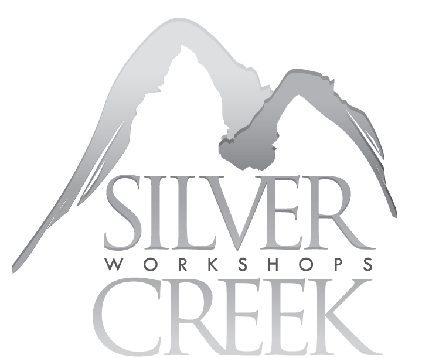
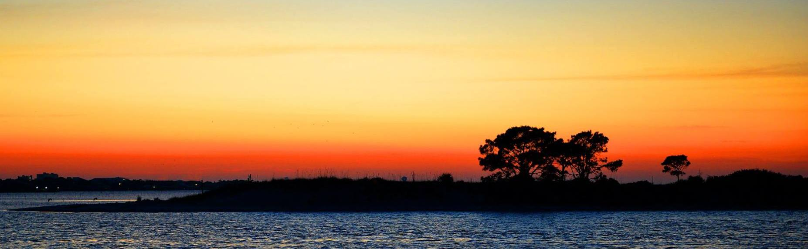

Silver Creek Workshops
Spring / 2018

Photography Workshop
Jeff Roush - Your Host and Instuctor
Gulf Coast Workshop
Panama City, Florida
April 12 -15, 2018
Thursday
Evening, Friday, Saturday, Sunday Morning
Hotel Recommendation for upcoming Photo Workshop
Hampton Inn / Panama City Beach / 2909 Thomas Dr, Panama City Beach, FL 32408
Phone: (850) 236-8988
This
Photography Program is an intense 3-Day Workshop Program with
|
www.roushstudios.com
- COMMERCIAL ADVERTISING |
This Photography Workshop will expose you not only to some of the most
beautiful sights and vistas in the area it will also push your limits as a
photographer.
Jeff has a
unique way of helping everyone understand the craft of photography.
If you have had trouble getting a grip on the settings, lenses, and camera
operations
then you're in for a real treat.
His method of teaching
is simple, clear, concise, and easy to follow.
His proven track record of successful students that have completed his courses
speaks for itself. You will learn this stuff!
The workshop
includes Photo Safari Trips hosted and led y Jeff. along with this will be
some educational time in the classroom, and a lot of "one-on-one"
mentoring with students..
Included in your registration is Jeff's Photography Book which you will get
during the Thursday Evening Kick-off.
And, to top it off, this program is in one of the most picturesque
places on the planet - The Gulf Coast / Panama City.
Click this link to get signed up now - you'll be forever changed after this workshop.